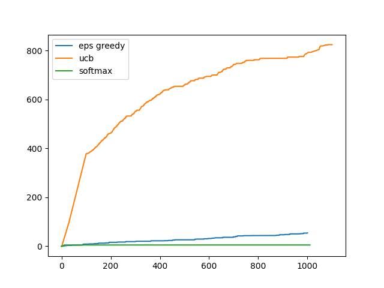
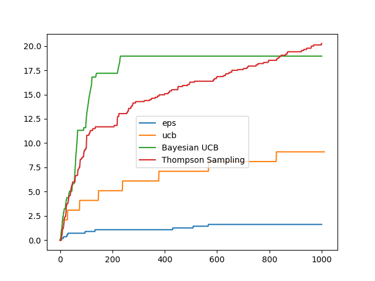

Bandit Algorithms
JigglypuffRL currently supports multi-armed Bandits with the every arm modeled as:
- Bernoulli/Beta Random Variable
- Gaussian Random Variable
There current list of supported Bandit Algorithms are:
1. Epsilon Greedy
2. Upper Confidence Bound
3. Bayesian Upper Confidence Bound (only in Bernoulli/Beta RV Formulation)
4. Thompson Sampling (only in Bernoulli/Beta RV formulation)
5. Softmax Action Selection (only in Gaussian RV formulation)
An example of the usage is as follows:
Import
from jigglypuffRL import EpsGreedyGaussianBandit, EpsGreedyBernoulliBandit, \
UCBGaussianBandit, UCBBernoulliBandit, BayesianUCBBernoulliBandit, \
ThompsonSampling, SoftmaxAction Selection
Initialize Models
epsGreedyBandit = EpsGreedyGaussianBandit(bandits=1, arms=10, eps=0.05)
ucbBandit = UCBGaussianBandit(bandits=1, arms=10)
softmaxBandit = SoftmaxActionSelection(bandits=1, arms=10)
Learn
epsGreedyBandit.learn(n_timesteps=1000)
ucbBandit.learn(1000)
softmaxBandit.learn(1000)
Plot
import matplotlib.pyplot as plt
plt.plot(epsGreedyBandit.regrets, label="eps greedy")
plt.plot(ucbBandit.regrets, label="ucb")
plt.plot(softmaxBandit.regrets, label="softmax")
plt.legend()
plt.savefig("GuassianBanditsRegret.png")
plt.cla()
Initialize Bernoulli/Beta models
epsbernoulli = EpsGreedyBernoulliBandit(bandits=1, arms=10, eps=0.05)
ucbbernoulli = UCBBernoulliBandit(bandits=1, arms=10)
thsampling = ThompsonSampling(bandits=1, arms=10, a=1, b=1)
bayesianbandit = BayesianUCBBernoulliBandit(bandits=1, arms=10, a=1, b=1, c=3)
Learn
epsbernoulli.learn(1000)
ucbbernoulli.learn(1000)
thsampling.learn(1000)
bayesianbandit.learn(1000)
Plot
plt.plot(epsbernoulli.regrets, label="eps")
plt.plot(ucbbernoulli.regrets, label="ucb")
plt.plot(bayesianbandit.regrets, label="Bayesian UCB")
plt.plot(thsampling.regrets, label="Thompson Sampling")
plt.legend()
plt.savefig("BernoulliBanditsRegret.png")
This creates the following plots:
| Gaussian Regrets | Bernoulli Regrets |
|---|---|
|  |  |